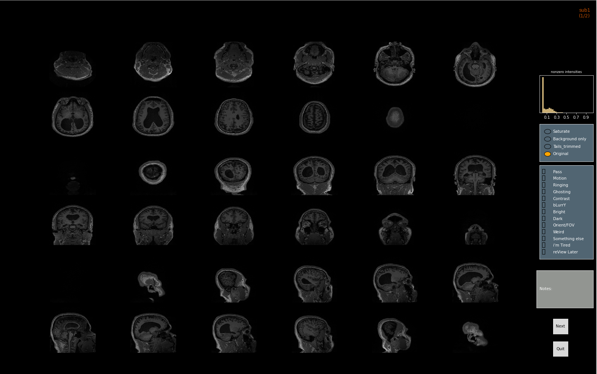
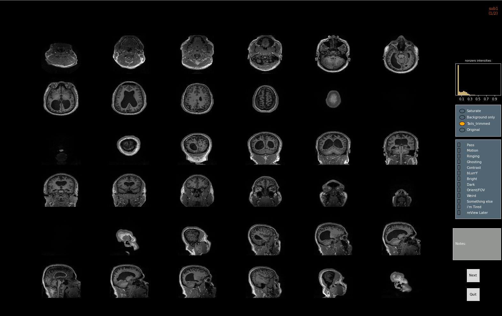
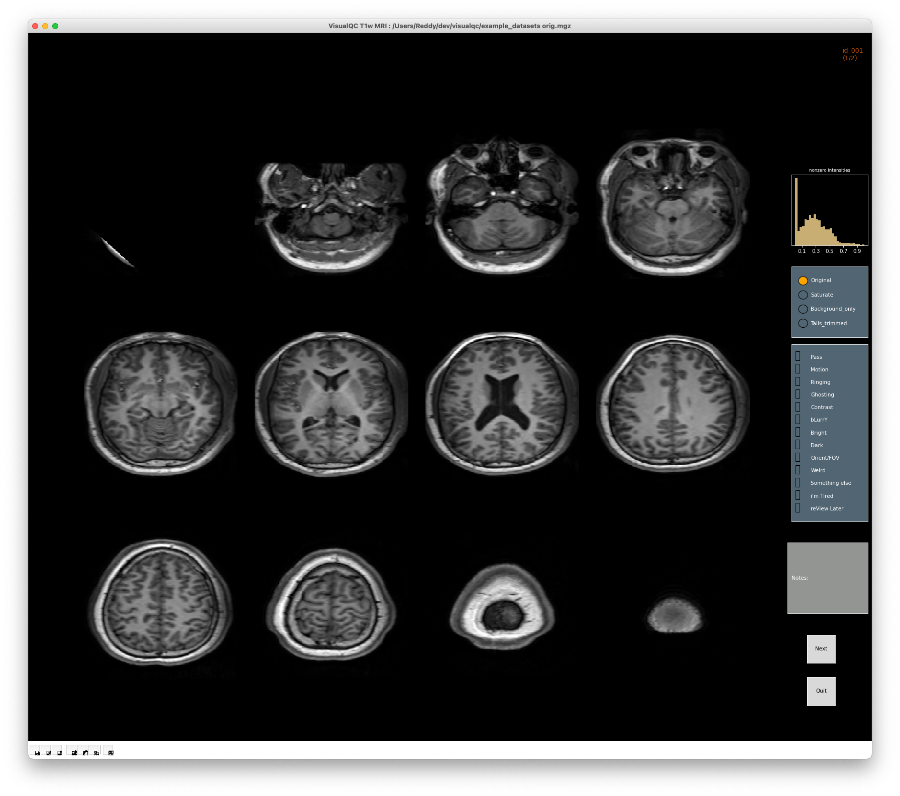

Gallery - Structural T1w MRI - artefact detection and rating¶
An example of a mosaic of slices for an anatomical (T1w) image is shown below:

VisualQC offers a few ways to enhance the image (e.g., when it’s too tark, choose Tails Trimmed to reduce the dominating influence of small percentage of very bright or very dark intensities (tails of the intensity distribution). For example, compare the two examples below:
 Another very useful function is to saturate intensities above a certain threshold to help reveal any “ghosting” and other issues hiding in the background of the image (outside the head area). Check the original unsaturated image, and the corresponding saturated image (at the default 33th percentile) respectively below. Pay attention to the regions outside the head in the bottom row:

Other visualizations could be useful in other scenarios and might help reveal subtle issues that might otherwise overlooked if not for these visualizations.
Note
Due to massive variation in image distributions and their properties, specific implementations of our visualization types here might not work the way we expect them to. We encourage you to take a look at the code, and customize it for your needs and use-cases.